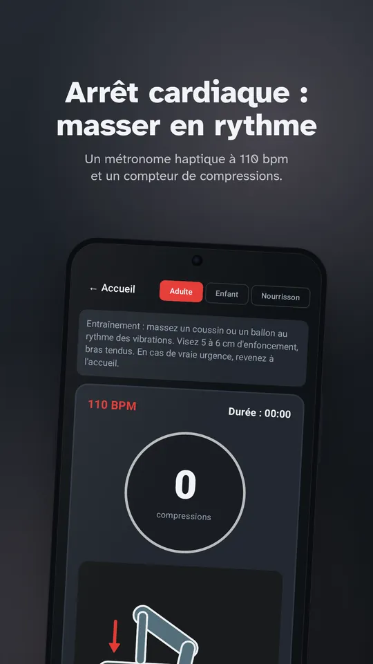
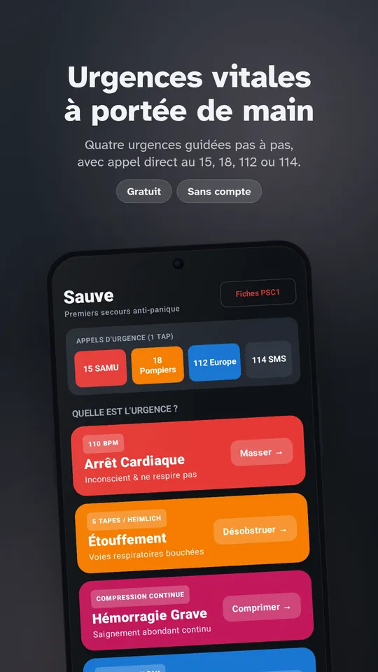
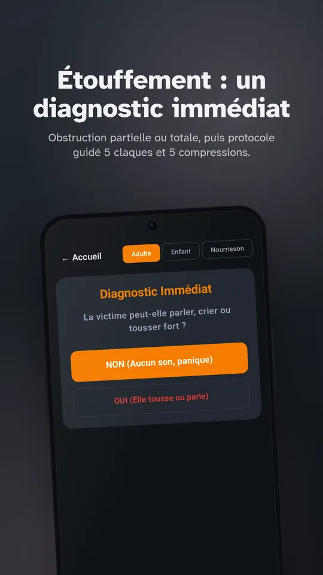
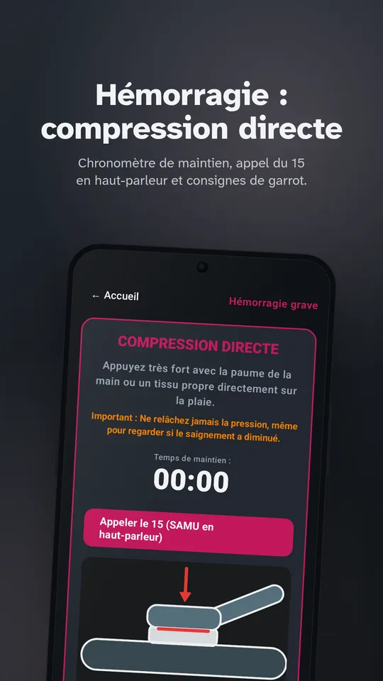
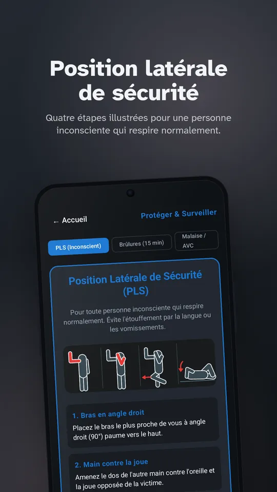
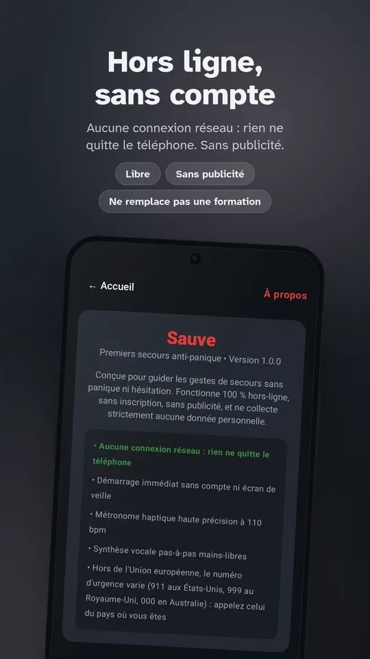

Arrêt cardiaque
Vérification de la conscience et de la respiration, appel des secours, métronome à 110 bpm, compte des compressions (en continu ou 30:2), relais toutes les 2 minutes et guide du défibrillateur.
Premiers secours anti-panique
Sauve vous guide pas à pas, à la voix et en vibrations, pour l'arrêt cardiaque, l'étouffement, l'hémorragie et la perte de connaissance. Elle s'ouvre en un instant et fonctionne sans réseau.

Chaque écran ne montre que ce qu'il faut faire maintenant.
Vérification de la conscience et de la respiration, appel des secours, métronome à 110 bpm, compte des compressions (en continu ou 30:2), relais toutes les 2 minutes et guide du défibrillateur.
Obstruction partielle ou totale, cycle de 5 claques dans le dos et 5 compressions abdominales, variante pour le nourrisson, passage en un tap si la personne perd connaissance.
Compression directe immédiate, chronomètre de maintien, pose du garrot avec l'heure enregistrée et consignes pour le relais médical.
Position latérale de sécurité illustrée étape par étape, surveillance de la respiration, refroidissement de 15 minutes pour une brûlure, test FAST pour l'AVC.
Le guidage est lu à voix haute par la synthèse vocale de votre téléphone, pour garder les yeux sur la personne.
Un métronome à 110 battements par minute vibre dans la poche et cadence les compressions.
Accès direct au 15, au 18, au 112 et au 114 (SMS pour les personnes sourdes ou malentendantes).





Parcourez l'écran d'urgence OLED de Sauve : appels directs, arrêt cardiaque avec métronome à 110 BPM et gestes d'étouffement.
Les conduites à tenir s'appuient sur les recommandations de l'European Resuscitation Council (ERC 2021) et sur les référentiels nationaux de premiers secours (PSC1).
Sauve ne remplace pas une formation aux premiers secours. En cas d'urgence, appelez d'abord le 15 ou le 112, puis suivez les consignes de l'appli.